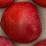
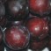
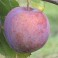

Plums
Information About Plums
Сливи
Сливите са от семейство Rosaceae
Това семейство се състои от 2830 вида класифицирани в 95 рода. Rosaceae призхожда от семейство Rosa. В рода Prunus, са класифицирани: сливи, череши, праскови, кайсии и бадеми.
Описание: Широколистни с плод с костилка. Плодът е малък, месест с мека кожа, а костилката е малка и твърда.
Видове сливи:
- Prunus domestica – най-често срещани сливи;
- Prunus institia (Damsons);
- Prunus spinosa (Sloe / Blackthorn);
- Prunus armeniaca (Apricots).
Качества на сливите според времето на зреене:
- Paнни - леки на вкус и сладост и са доста меки, когато узреят;
- Сливи от средата на сезона - сладки и сочни;
- Късносезонни - могат да са вкусни, но имат тенденцията да са по-плътни.
Най-разпространени Видове Сливи

Предпочитан сорт в много страни. Мека, сладка, сочна и неустоима, когато е добре озряла. Може да е безвкусна, дори кисела, когато не е добре узряла.
 Червена кожа, жълто месо, с неотделяема костилка от средата или края на сезона. Като общо има много добър вкус и изключително високи нива на сладост и е с добро съдържание на сок. Това е чудесна слива от късния сезон, която може да бъде почти неустоима за изяждане ако е добре узряла: чудесна алтернатива на традиционните сортове от късния сезон.
 Ангелино сливата е сорт от късния сезон, която почти става единствен избор за потребителите през есента (когато свършва сезонът в северното полукълбо) и през пролетта (когато свършва сезонът в южното полукълбо). Това е тъмночервена слива с бледо жълто месо и малка костилка.

Сортът бронтозавърско яйце с жълто виолетова кожа със зелени лунички имитиращи праисторическо яйце. Това е кръстоска между слива и кайсия и често дава като резултат най-доброто от двете, дава аромат и сладост, а в този случай и необичаен вид. Произход: Бронтозавърското яйце произхожда от Испания.
 Висококачествена слива за ядене. Голям плод с розова до тъмно розова кожа. Подобен на Виктория, но класифициран като имащ по-добро качество за ядене, макар и не така добре изглеждащ. Ескалибур е слива от средата и края на сезона, малко по-късна от Виктория. Произход: 1980 Бристол Великобритания.

Кралят на вскуса е уникален хибрид между слива и кайсия. Забележителен букет от аромат напомня за дъвка за балончета и е с приятен вкус. Плодът има червенорозова кожа и сладко червено месо. Произход: расте в Южна Африка, Италия, Испания, Франция, Калифорния.